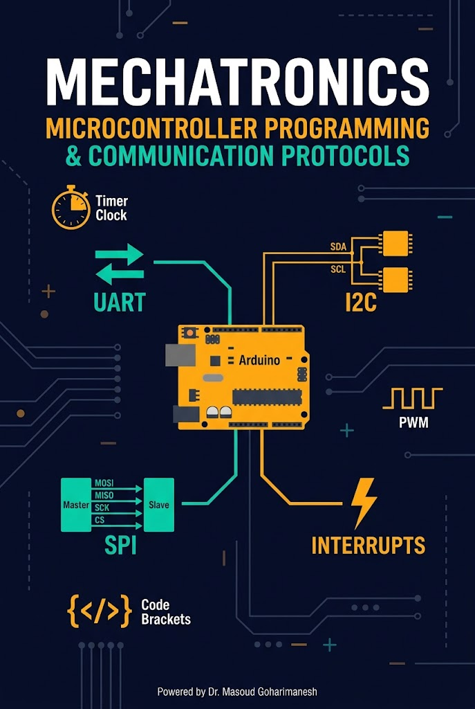
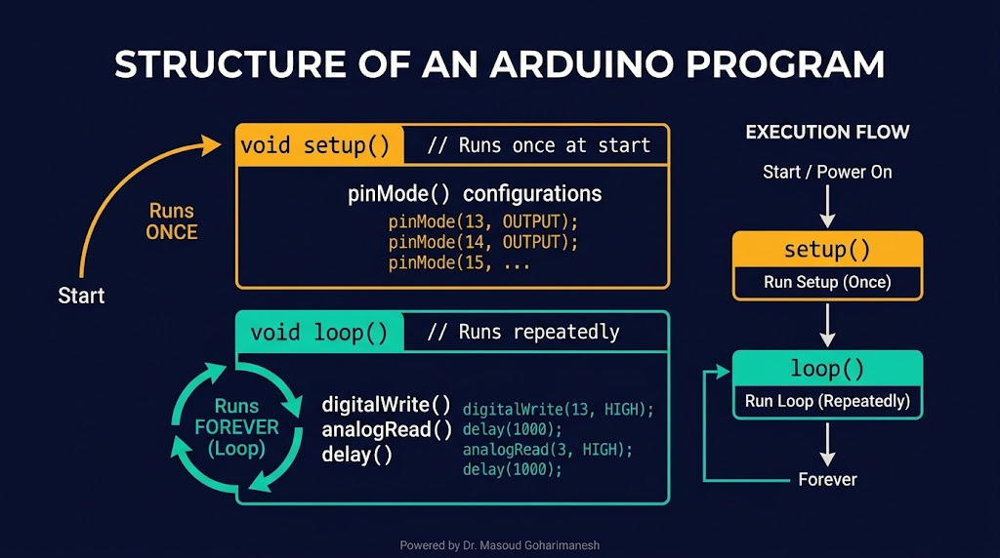
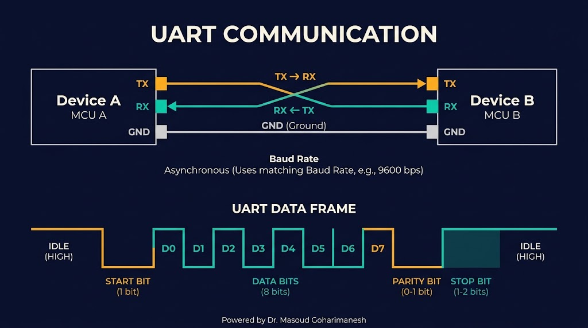
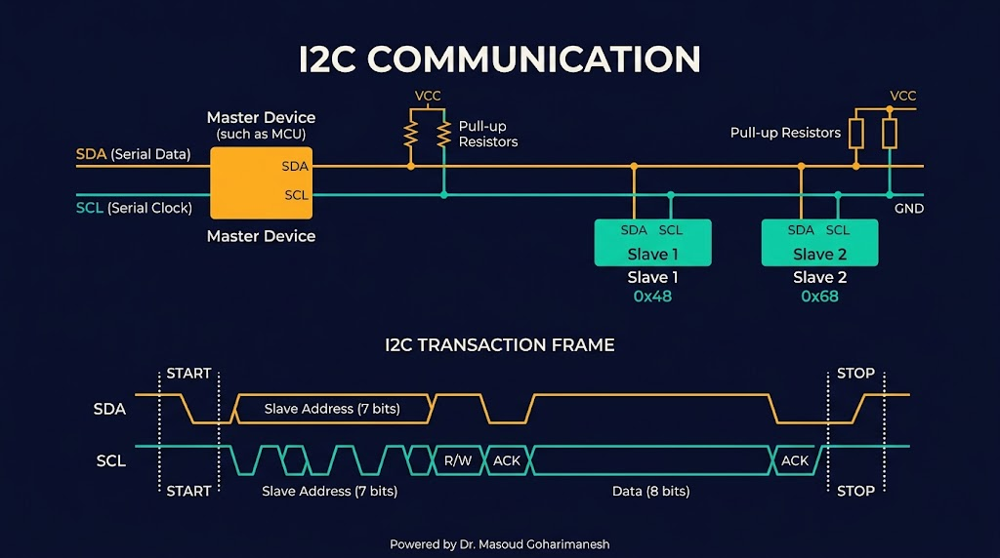
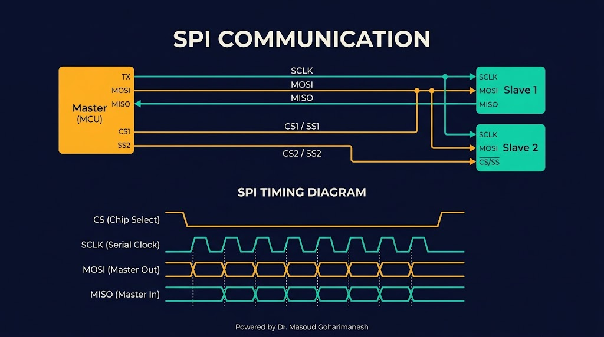
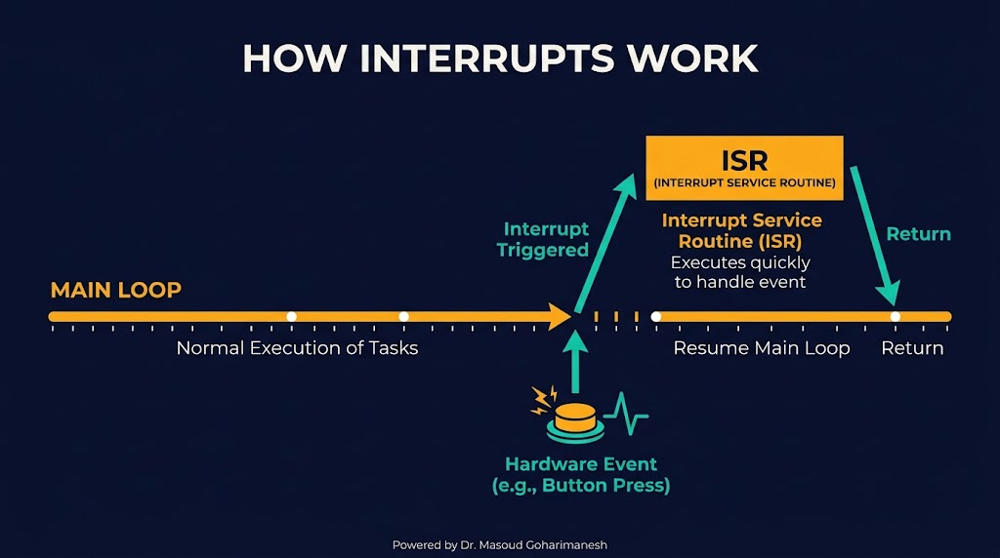
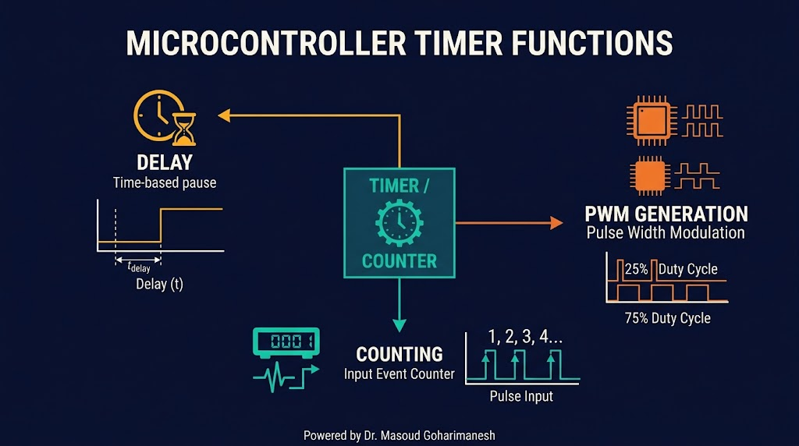
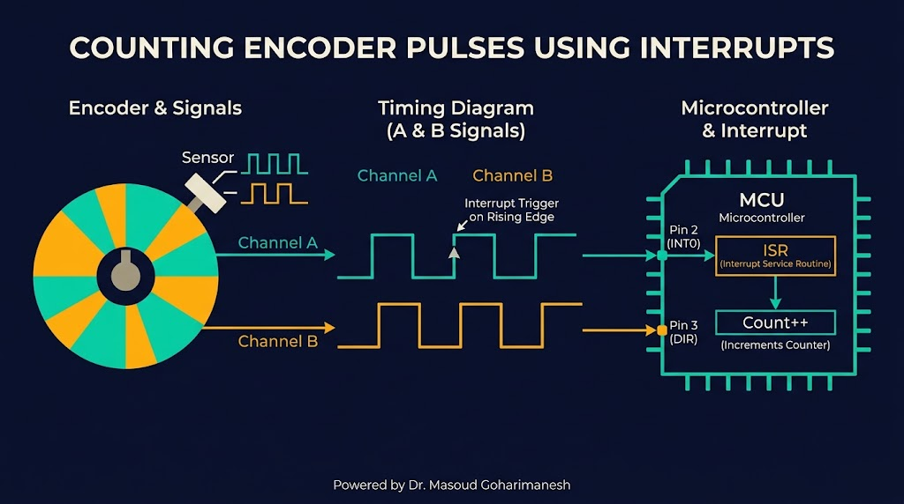

بخش دوم: برنامهنویسی، پروتکلها، وقفه
دکتر مسعود گوهریمنش
دانشیار گروه مهندسی مکانیک
دانشگاه تربت حیدریه | پاییز ۱۴۰۵
در یک ربات پیشرفته، دهها دستگاه با پروتکلهای مختلف با هم صحبت میکنند!
تفاوت اصلی UART، I2C و SPI چیست؟ برای هر کدام یک کاربرد رباتیک مثال بزنید.
Setup و Loop — قلب برنامهنویسی آردینو

یک بار در ابتدای اجرا میشود. برای پیکربندی پینها، مقداردهی اولیه متغیرها، شروع ارتباط سریال.
void setup() {
pinMode(13, OUTPUT);
Serial.begin(9600);
}
بهطور بینهایت تکرار میشود. برای خواندن سنسور، اعمال فرمان، اجرای الگوریتم کنترل.
void loop() {
int sensor = analogRead(A0);
digitalWrite(13, HIGH);
delay(500);
digitalWrite(13, LOW);
delay(500);
}
از C تا Python
پایه آردینو — سریع، کارآمد
سادهشده برای مبتدیان
بر اساس Python — آسان
سطح پایین — حداکثر سرعت
توابع اصلی
pinMode(pin, INPUT); pinMode(pin, OUTPUT); pinMode(pin, INPUT_PULLUP); int val = digitalRead(pin); digitalWrite(pin, HIGH); digitalWrite(pin, LOW);
int sensor = analogRead(A0); // 0 to 1023 (10-bit) analogWrite(pin, 128); // 0 to 255 (8-bit PWM) int ref = analogReadResolution(12);
نکته رباتیک: برای خواندن دقیق سنسورهای آنالوگ، حتماً چند نمونه بگیرید و میانگینگیری کنید — نویز را کاهش میدهد.
سادهترین پروتکل ارتباطی

ارتباط چند دستگاه با ۲ سیم

سریعترین پروتکل ارتباطی

انتخاب مناسب برای هر کاربرد
| ویژگی | UART | I2C | SPI |
|---|---|---|---|
| تعداد سیم | ۲ | ۲ | ۴ + CS |
| تعداد دستگاه | ۲ (نقطهبهنقطه) | تا ۱۲۷ | چند (با CS جدا) |
| سرعت | متوسط | متوسط | بالا |
| همزمانی | غیرهمزمان | همزمان | همزمان |
| کاربرد | دیباگ، بلوتوث | IMU، OLED | RFID، SD |
قاعده انتخاب: ساده و دوربرد → UART | چند دستگاه و کم سیم → I2C | سرعت بالا و حجم داده زیاد → SPI
واکنش فوری به رویدادها

وقفه یک سیگنال سختافزاری یا نرمافزاری است که باعث توقف موقت برنامه اصلی و اجرای یک تابع خاص (ISR) میشود. پس از اتمام ISR، برنامه اصلی از همانجا ادامه مییابد.
قلب زمانبندی در میکروکنترلر

delay()، millis()، micros()
شمارش پالسهای خارجی (انکودر)
تولید موج مربعی با Duty Cycle دلخواه
دقت و کارایی
analogWrite(9, 128);
digitalWrite(pin, HIGH); delayMicroseconds(t_high); digitalWrite(pin, LOW); delayMicroseconds(t_low);
دقیقترین روش اندازهگیری سرعت

volatile long pulseCount = 0;
const int encoderPin = 2;
void setup() {
pinMode(encoderPin, INPUT_PULLUP);
attachInterrupt(digitalPinToInterrupt(encoderPin),
countPulse, RISING);
Serial.begin(9600);
}
void countPulse() {
pulseCount++;
}
void loop() {
Serial.print("Pulses: ");
Serial.println(pulseCount);
delay(100);
}
شمارش پالس انکودر با وقفه
سرعت چرخش را تغییر دهید و شمارش پالس توسط وقفه را ببینید.
جلسه یازدهم - میکروکنترلرها (بخش دوم)
نکات کلیدی جلسه یازدهم
جلسه بعد: تغذیه الکتریکی و مدارهای واسط
Powered by Dr. Masoud Goharimanesh